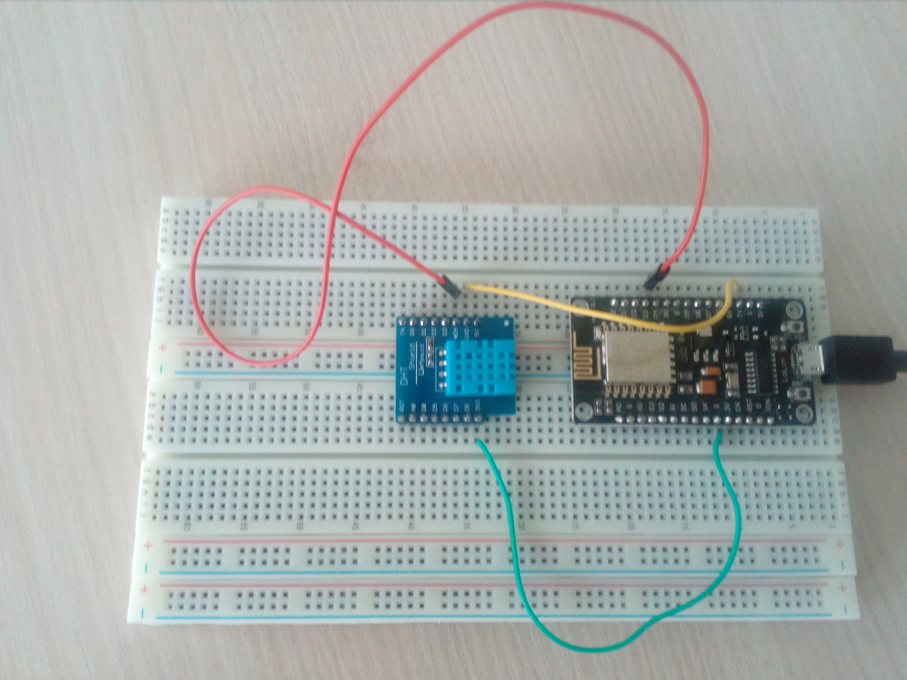

1. Prérequis
Matériel:
Programme:
2.Vue d ensemble .

3.Partie électronique informatique embarquée
#include
#include LowPower.h
#include SoftwareSerial.h
#include math.h
#include Wire.h
#include "rgb_lcd.h"
#include Wire.h
RTC_DS1307 RTC;
rgb_lcd lcd ;
const int colorR = 222;
const int colorG = 50;
const int colorB = 244;
int tmp = 0 ;
SoftwareSerial mySerial(10, 11);
int capteur = A1;
int valeur_brute = 0 ;
const int B = 4275;
void setup() {
Wire.begin();
RTC.begin();
if (! RTC.isrunning()) {
Serial.println("RTC is NOT running!");
// following line sets the RTC to the date & time this sketch was compiled
RTC.adjust(DateTime(__DATE__, __TIME__));
Serial.begin(9600);
mySerial.begin(9600);
lcd.begin(16, 2);
lcd.setRGB(colorR, colorG, colorB);
pinMode(10, INPUT);
pinMode(11, OUTPUT);
// Print a message to the LCD.
lcd.print("temperature!");
delay(1000);
}
}
void loop() {
DateTime now = RTC.now();
Serial.print(now.year(), DEC);
Serial.print('/');
Serial.print(now.month(), DEC);
Serial.print('/');
Serial.print(now.day(), DEC);
Serial.print(' ');
Serial.print(now.hour(), DEC);
Serial.print(':');
Serial.print(now.minute(), DEC);
Serial.print(':');
Serial.print(now.second(), DEC);
Serial.println();
delay(1000);
valeur_brute = analogRead(capteur);
float R = 1023.0/((float)valeur_brute)-1.0;
R = 100000.0*R;
//convert to temperature via datasheet ;
float temperature=1.0/(log(R/100000.0)/B+1/298.15)-273.15;
tmp=(int)temperature;
//Serial.println( temperature) ;
Serial.print("Temperature en C°=" );
Serial.print(tmp , DEC );
// mySerial.print("Temperature en C°= " );
mySerial.println(tmp,DEC);
// set up the LCD's number of columns and rows:
lcd.setCursor(0, 1);
// print the number of seconds since reset:
lcd.print(temperature);
//LowPower.powerDown(SLEEP_8S, ADC_OFF, BOD_OFF);
delay(500);
} Une deuxieme possibilité : L'utilisation d'un ESP et d'un capteur numérique DHT. Voir code et photos.
Intéressons-nous au code : Nous commençons par récupérer les valeurs de température et d'humidité avec le DHT. Ici nous utiliserons une bibliothéque qui se nomme aRest pour générer un fichier Json, accessible via une adress IP générée automatiquement par l'ESP. Le fichier Json contiendra les valeurs "température et humidité". Pour les valeurs de température extérieure, on récupère un fichier Json sur le site "openweathermap" qui se joindra au premier fichier via aRest.

/ /import required libraries
#include ESP8266WiFi.h
#include PubSubClient.h
#include aREST.h
#include "DHT.h"
#define DHTPIN D4 // what digital pin we're connected to
// Uncomment whatever type you're using!
#define DHTTYPE DHT11
DHT dht(DHTPIN, DHTTYPE);
// Clients
WiFiClient espClient;
PubSubClient client(espClient);
// Create aREST instance
aREST rest = aREST(client);
// Unique ID to identify the device for cloud.arest.io
char* device_id = "unique_device_id";
// WiFi parameters
const char* ssid = "SFR_B1B0";
const char* password = "acabeaktosto9mbizzle";
// Variables to be exposed to the API
float f;
float t;
float h;
String local_ip = "";
// The port to listen for incoming TCP connections
#define LISTEN_PORT 80
// Create an instance of the server
WiFiServer server(LISTEN_PORT);
// Functions
void callback(char* topic, byte* payload, unsigned int length);
void setup(void)
{
// Start Serial
Serial.begin(115200);
Serial.println("DHTxx test!");
dht.begin();
// Set callback
client.setCallback(callback);
// Init variables and expose them to REST API
rest.variable("temperature", &t);
rest.variable("humidity", &h);
rest.variable("local_ip", &local_ip);
// Give name & ID to the device (ID should be 6 characters long)
rest.set_id(device_id);
rest.set_name("esp8266");
// Connect to WiFi
WiFi.begin(ssid, password);
while (WiFi.status() != WL_CONNECTED) {
delay(500);
Serial.print(".");
}
Serial.println("");
Serial.println("WiFi connected");
// Start the server
server.begin();
Serial.println("Local server started on IP:");
// Print the IP address
Serial.println(WiFi.localIP());
local_ip = ipToString(WiFi.localIP());
}
void loop() {
delay(2000);
// Reading temperature or humidity takes about 250 milliseconds!
// Sensor readings may also be up to 2 seconds 'old' (its a very slow sensor)
h = dht.readHumidity();
// Read temperature as Celsius (the default)
t = dht.readTemperature();
// Read temperature as Fahrenheit (isFahrenheit = true)
f = dht.readTemperature(true);
// Check if any reads failed and exit early (to try again).
if (isnan(h) || isnan(t) || isnan(f)) {
Serial.println("Failed to read from DHT sensor!");
return;
}
// Compute heat index in Fahrenheit (the default)
float hif = dht.computeHeatIndex(f, h);
// Compute heat index in Celsius (isFahreheit = false)
float hic = dht.computeHeatIndex(t, h, false);
Serial.print("Humidity: ");
Serial.print(h);
Serial.print(" %\t");
Serial.print("Temperature: ");
Serial.print(t);
Serial.print(" *C ");
Serial.print(f);
Serial.print(" *F\t");
Serial.print("Heat index: ");
Serial.print(hic);
Serial.print(" *C ");
Serial.print(hif);
Serial.println(" *F");
// Connect to the cloud
rest.handle(client);
// Handle Local aREST calls
WiFiClient clientLocal = server.available();
if (!clientLocal) {
return;
}
while(!clientLocal.available()){
delay(1);
}
rest.handle(clientLocal);
}
// Handles message arrived on subscribed topic(s)
void callback(char* topic, byte* payload, unsigned int length) {
rest.handle_callback(client, topic, payload, length);
}
// Convert IP address to String
String ipToString(IPAddress address)
{
return String(address[0]) + "." +
String(address[1]) + "." +
String(address[2]) + "." +
String(address[3]);}
4.Partie web :
var express = require('express')
var app = express()
var server = require('http').createServer(app);
var io = require('socket.io')(server);
var btSerial = new (require('bluetooth-serial-port')).BluetoothSerialPort();
var temperature = "";
var Temp="";
btSerial.on('found', function(address, name) {
if (name=='HC-06')
btSerial.findSerialPortChannel(address, function(channel) {
btSerial.connect(address, channel, function() {
console.log('connected');
btSerial.write(new Buffer('my data', 'utf-8'), function(err, bytesWritten) {
if (err) console.log(err);
});
btSerial.on('data', function(buffer) {
temperature = temperature + buffer.toString('utf-8')
if (temperature.indexOf("\n") != -1){
console.log("La temperature est de "+temperature);
Temp = temperature;
temperature = "";
io.emit('temperature',Temp);
}
});
}, function () {
console.log('cannot connect');
});
// close the connection when you're ready
btSerial.close();
}, function() {
console.log('found nothing');
});
});
btSerial.inquireSync();
app.use(express.static('public'));
app.get('/', function (req, res) {
res.render('index.ejs',{temperature: Temp})
})
server.listen(3000) var rest = require('rest-js');
var express = require('express');
var EventEmitter = require('events').EventEmitter;
var bodyParser = require("body-parser");
var app = express();
var server = require('http').createServer(app);
var io = require('socket.io')(server);
var temp =" "
var temperature = " "
var hh = " "
var humidity = " "
var restApi = rest('http://192.168.43.183/', {
crossDomain: true
});
setInterval(function(){
restApi.read('users/der-On/repos', function(error, data) {
temperature = data.variables.temperature ;
hh = data.variables.humidity ;
humidity = hh ;
temp = temperature;
temperature = "";
console.log("data");
io.emit('temperature',temp);
io.emit('humidite',humidity);
console.log(temp);
console.log(hh) ;
;});},3000);
app.use(express.static('public'));
app.get('/', function (req, res) {
console.log(temp);
res.render('index.ejs',{temperature: temp, humidity:humidity})
});
server.listen(3000)